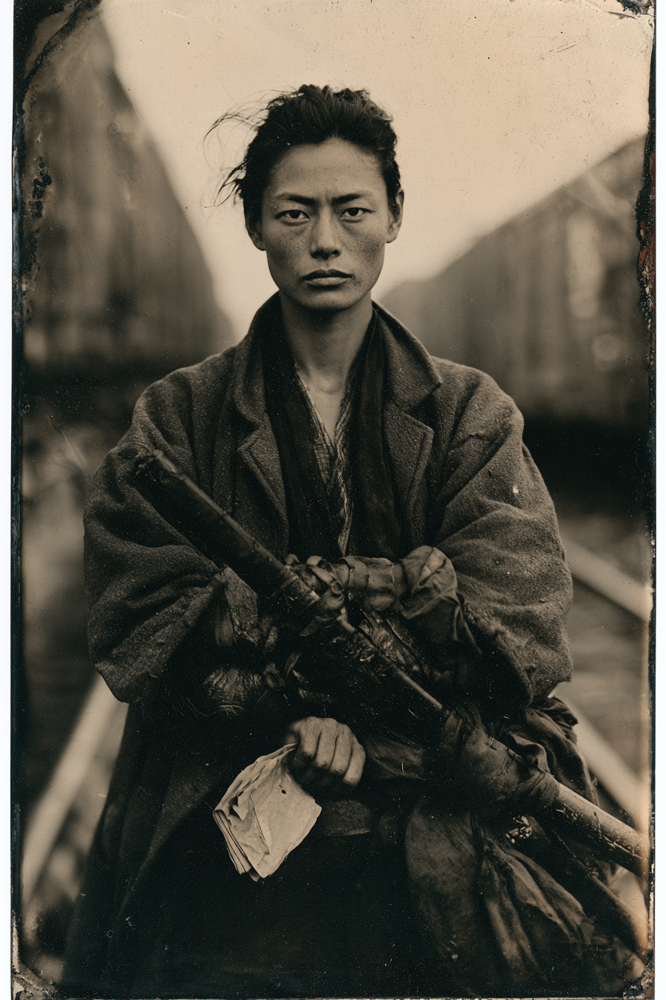

Archetyp: CHI MASTER (Chi-Meister)
Nennt sich gegenüber Anglos „Sadie“, weil über „Sae“ gelacht wird und sie aufgehört hat, dafür Geduld auszugeben.
Sie hat elf Namen auf dem Papier eines Toten, und sieben davon sind durchgestrichen.
| Agility | d8 | 2 |
| Smarts | d4 | 0 |
| Spirit | d6 | 1 |
| Strength | d6 | 1 |
| Vigor | d6 | 1 |
| Skill | Attr. | Die | Pts. |
|---|---|---|---|
| Fighting | Agi | d10 | 5 |
| Focus | Spi | d6 | 2 |
| Intimidation | Spi | d6 | 2 |
| Athletics | Agi | d6 | 1 |
| Stealth | Agi | d6 | 1 |
| Language (English) | Sma | d4 | 1 |
Hintergrund. Sie war fünfzehn, als sie mit den Aizu-Leuten von der China in San Francisco von Bord ging — gut zwanzig Gefolgsleute einer Domäne, die einen Krieg verloren hatte, einem deutschen Abenteurer namens Schnell folgend, zu einer Tee- und Seidenfarm in den Vorbergen von Gold Hill. Die Kolonie war in zwei Jahren tot; die Maulbeerbäume gingen nicht an, das Wasser war stromaufwärts an den hydraulischen Bergbau verloren, und ein Mädchen namens Okei, das neben ihr schlief, liegt bis heute auf diesem Hügel begraben. Sae ging nicht zurück. Sie spülte sich nach San Francisco hinunter und in ein Kwoon hinter einem Kräuterladen an der Waverly Place, wo ein Hung-Ga-Mann aus Foshan namens Chan Bok-lam sie zum Kehren anstellte und, nachdem er ihr vier Jahre beim Nicht-Weggehen zugesehen hatte, zu unterrichten begann — gegen den Widerspruch jedes älteren Schülers im Raum, von denen keiner sie je si-mui nannte, und von denen einer, sein eigener Neffe Chan Yau-sing, sie elf Jahre lang „das japanische Mädchen“ nannte und dann den alten Mann für die Kasse der Schule und den Lohn eines Bahnschergen der Iron-Dragon-Linie tötete.
Build. Geschicklichkeit W8, Verstand W4, Willenskraft W6, Stärke W6, Konstitution W6 · Parade 7, Robustheit 5 Kämpfen W10, Fokus W6, Einschüchtern W6, Athletik W6, Heimlichkeit W6, Sprache (Englisch) W4 Talente: Martial Artist (Kampfkünstler), Arcane Background (Chi-Meister), First Strike (Erstschlag — einmal pro Runde ein freier Kämpfen-Angriff gegen den ersten Gegner, der in ihre Reichweite tritt. Sie wartet nicht.) Handicaps: Vengeful (Rachsüchtig) — Major: sie wird körperlichen Schaden anrichten, um zu kassieren. Sie hadert damit nicht und findet Leute, die damit hadern, ermüdend. · Outsider (Außenseiter) — Minor: sie war Ausländerin in einer amerikanischen Kolonie, dann Ausländerin in einer chinesischen Schule und ist jetzt Ausländerin in jedem Saloon von hier bis Cheyenne. Dreifach. · Death Wish — Minor: sie will die Liste zu Ende bringen und dann aufhören. Sie hat für danach nichts geregelt, weil es kein Danach gibt. Mächte (15 MP): Abwehren (Pflicht), Waffe verbessern (+2 Schaden, +4 bei Steigerung — also St W6+W4+4 aus einer Faust), Wandkrabbler (sie geht den Güterwagen hinauf und kommt auf ihm herunter; brutal in Kombination mit Erstschlag: in Reichweite fallen lassen, und der freie Angriff gehört ihr schon). Trappings: ein hartes Ausatmen im Kiai, dann landet der Schlag irgendwo, wo er nicht hätte hinkommen können. Chinesische Form, japanische Atmung — und sie weiß, dass ihr keine der beiden Hälften ganz gehört. Aufstiegspfad: Überlegenes Kung Fu mit Kralle des Adlers beim ersten Aufstieg — DB 4 und schwere Waffe auf waffenlose Schläge macht sie zur Antwort der Posse auf Kesselblech und Hellstrommes Automaten. Ausrüstung: ein Billig-Pferd (das beißt) mit billigem Sattel, Reitmantel, Bowiemesser zum Abhäuten und nie zum Kämpfen, Feldflasche und Proviant. Die leere Wakizashi-Scheide ihres Vaters — Lack, gerissen, in geöltes Tuch gewickelt; die Klinge ging 1872 für die Überfahrt aus einer gescheiterten Kolonie weg, drei Jahre bevor die Meiji-Regierung das Tragen ohnehin unter Strafe stellte. Chan Bok-lams eiserne Trainingsringe unter den Ärmeln an den Unterarmen — deshalb hört man sie kommen. Die Liste, achtfach gefaltet. Und hundertsechsundzwanzig Dollar ins Mantelfutter genäht, was genau die Passage nach Yokohama ist und was sie nicht ausgeben wird.
Aufhänger. Zwei der sieben durchgestrichenen Namen waren nicht Yau-sings Leute. Sie hat sich geirrt, und beim zweiten wusste sie es, bevor sie fertig war, und dessen Witwe führt in Sacramento eine Pension, an der Sae zweimal vorbeigeritten ist, ohne anzuhalten. Und Yau-sing flieht nicht. Er legt ihr seit acht Monaten absichtlich die Spur — denn was immer ihm beigebracht hat, Chi zum Nehmen statt zum Halten zu benutzen, hat ihm gesagt, dass es einen zweiten Schüler will, und dass es sie lieber mag. Ihr ist aufgefallen, dass der Rückschlag in letzter Zeit falsch schmeckt: patzt sie bei einer Fokus-Probe, kommt die Erschöpfung mit einem Moment ungeheurer Ruhe.
Warum es Spaß macht. Du bist der Eröffnungszug. Die Posse prüft noch ihre Ladung, da bist du schon durch den Raum, Waffe verbessern brennt, Erstschlag verbraucht, und der Kampf ist zu einer Subtraktionsaufgabe geworden. Und danach musst du am Lagerfeuer mit Leuten sitzen, die dir den einzigen Plan ausreden wollen, den du hast.
Falls die zweite Figur lieber ein weißer Außenseiter sein soll: die sauberste Variante ist ein kornischer Hartgesteinshauer aus Grass Valley, den eine chinesische Kolonne aus einem gefluteten Abbau zog und der vier Jahre in einer toisanesischen Pension eine Kunst lernte, die ihm niemand gönnte. Derselbe Build funktioniert; Außenseiter gegen Shamed (Minor) tauschen und die Peinlichkeit darin bestehen lassen, dass er die Form perfekt ausführt und im Raum, in dem sie geübt wird, nie willkommen war.
Regelgrundlage: Regelnotizen · Archetyp-Notizen